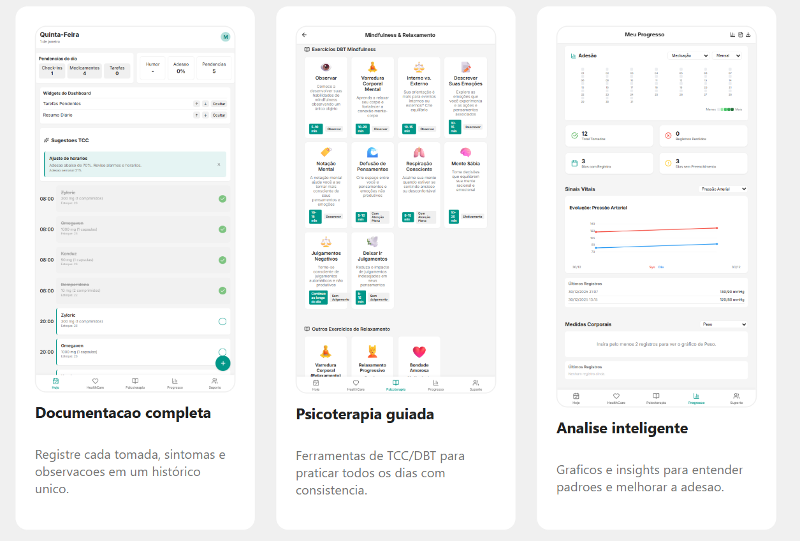
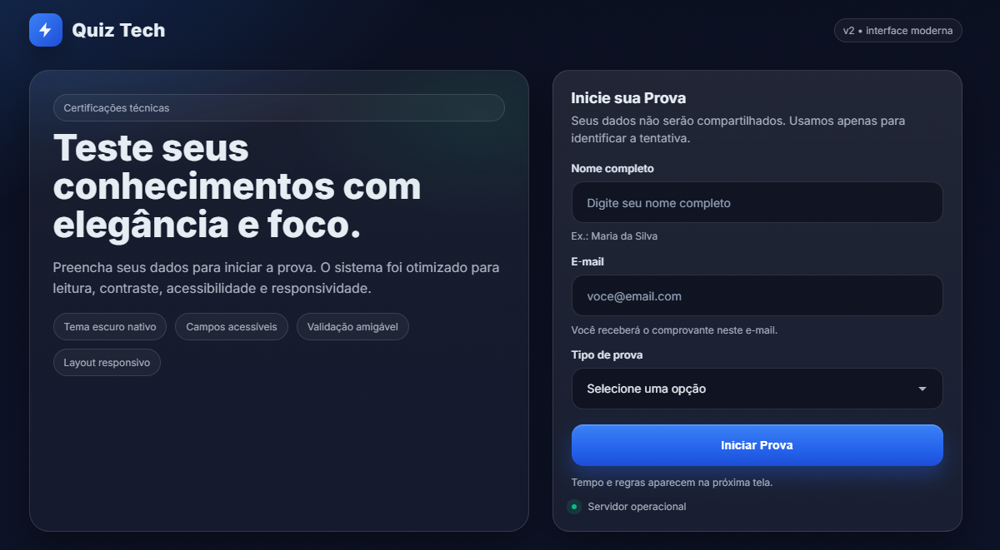
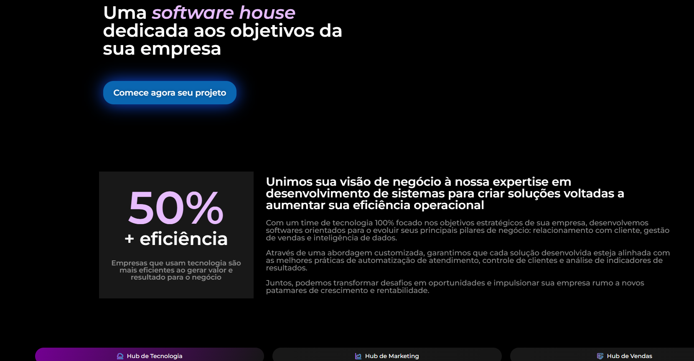

Web, Dados e Automação com disciplina operacional
Profissional com mais de 10 anos em infraestrutura, monitoramento e automação em ambientes corporativos (setor financeiro). Atuação com análise de dados/BI, observabilidade e rotinas 24x7 — e, mais recentemente, desenvolvimento web full stack.

Contato
LinkedIn Badge
Projetos
Conteúdo enxuto, orientado a prova: o que é, qual problema resolve, como foi construído.
Deveriar
PWA para saúde e psicoterapia (TCC/DBT): medicamentos, sinais vitais, sintomas, exercícios guiados e histórico.
React 19 • Vite PWA • Fastify • Firestore • PostgreSQL • Cloud Run • Vercel • Stripe  Prints do app: documentação, psicoterapia guiada e análise/insights.UltraHub CRM
CRM com Oportunidades, Propostas, Clientes, Produtos e Dashboard (em evolução; repo fechado).
Node.js • React • Bootstrap • MongoDB Print da tela de Oportunidade com dashboards.
Print da tela de Oportunidade com dashboards.
Quiz Tech
Plataforma de quizzes para certificações técnicas (UI moderna, acessibilidade e foco em leitura/contraste).
GitHub Pages • Front-end Web • UX/UI  Print da tela inicial e formulário de início de prova.Landing corporativa-tech
Página institucional com estética corporativa-tech (apresentação de proposta, CTA e seções de valor).
HTML/CSS • Layout responsivo • Design system simples  Print de seção “hero” e bloco de proposta de valor.TODO (para ficar “contratável”)
- Em cada projeto, escreva 3 bullets: Problema → Solução → Prova/Impacto.
- Adicione métricas simples: usuários, tempo economizado, latência, custo, etc (mesmo aproximado).
- Inclua 1 parágrafo de arquitetura: dados, autenticação, deploy e observabilidade.